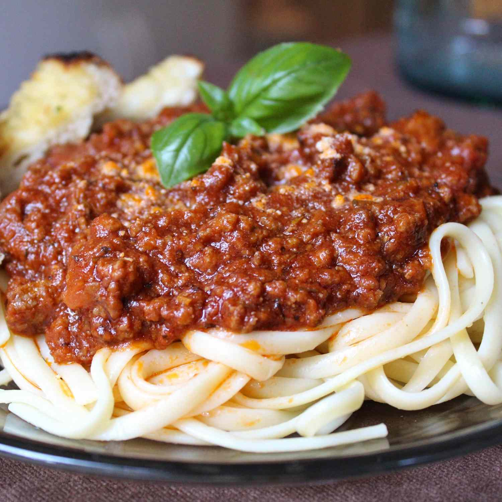

Spaghetti Sauce

Description
This spaghetti sauce is apparently really good. Some guy got it as a wedding gift and he was very happy.
Ingredients
- 1/2 cup of butter
- 3 tablespoons of olive oil
- 1 large onion, chopped
- 3 cloves garlic, chopped
- 1 pound of ground beef
- 1 pound of mild sausage
- 4 teaspoons of Italian seasoning
- 2 teaspoons of salt (Optional)
- 2 teaspoons of dried rosemary
- 1 and 1/2 teaspoons of dried oregano
- 1/2 teaspoon of ground black pepper
- 76 fluid ounces of water
- 1 (29 ounce) can of tomato puree
- 3 (6 ounce) cans of tomato paste
Steps
-
Heat butter and olive oil together with onion and garlic in a large pot over medium heat.
Cook and stir ground beef and sausage in the onion mixture until browned and crumbly, 10 to 15 minutes.
Stir Italian seasoning, salt, rosemary, oregano, and black pepper into ground beef-sausage mixture; simmer for 20 minutes.
-
Pour water, tomato puree, and tomato paste into ground beef-sausage mixture.
Simmer, stirring occasionally, over low heat until flavors have combined, at least 2 hours.